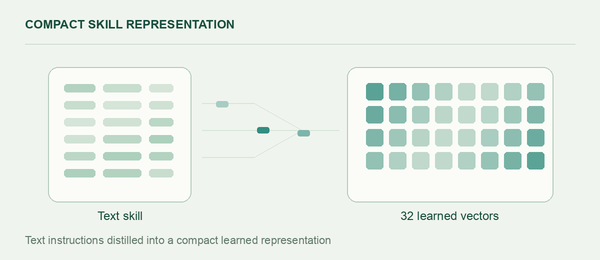
Compact skills for language-model agents
Reproduced SoftSkill on Qwen3-8B, evaluating how 32 learned vectors compare with a long text skill across accuracy, context use, and evaluation reliability.
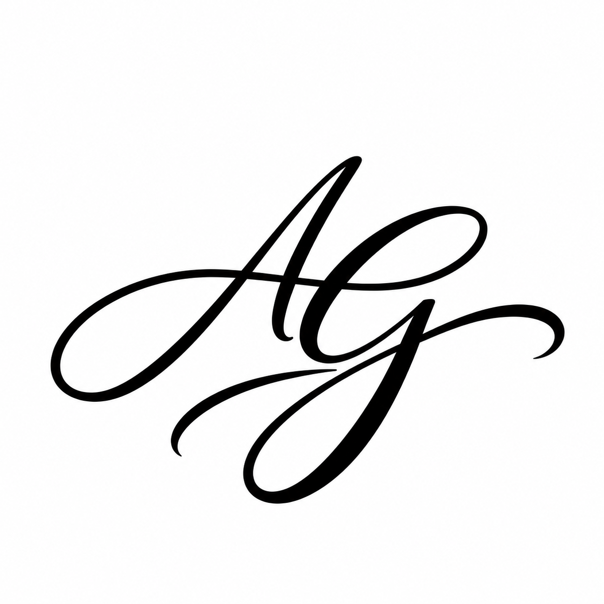
ML Research Scientist · PhD Student
Efficient models. Adaptive agents.
University of WaterlooI research how language-model agents learn from execution feedback and how generative models can do more with less computation. I’m a Computer Science PhD student at the University of Waterloo and an ML Research Scientist Intern at Huawei.
How can an agent turn execution feedback into a reusable skill? How can a generative model make better use of its computation? These questions guide my research.
I work across learned agent skills, compact memory, and efficient generation, connecting model research with the training, inference, and evaluation systems needed to test it.
Skills and memory that improve through execution feedback
Compact learned skills evaluated in my SoftSkill reproduction
Masked diffusion, parallel generation, and GPU-aware model research
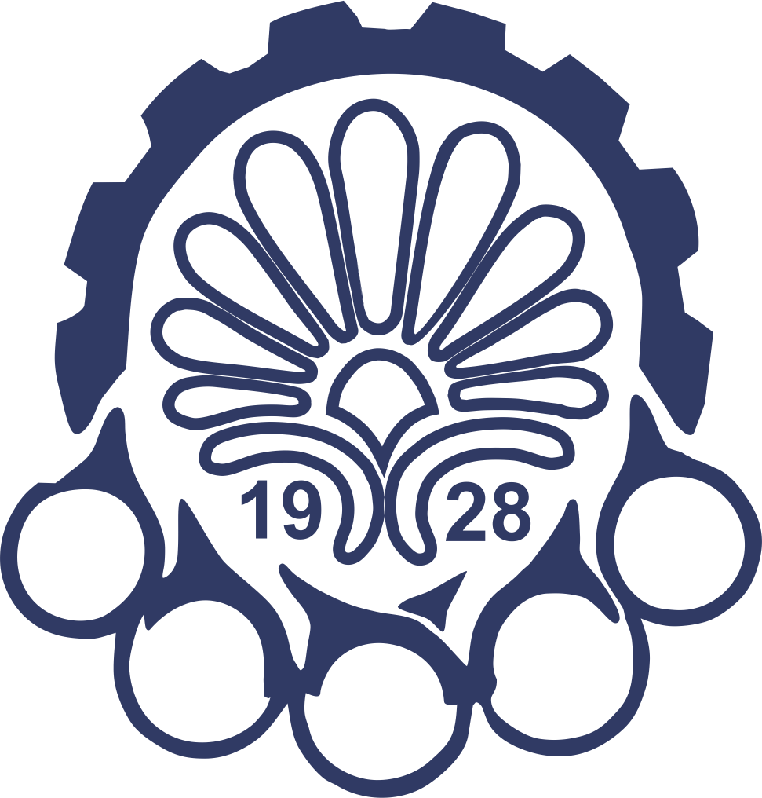
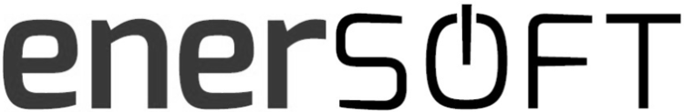
Explore my current work in agentic and generative AI, with earlier computer vision and biomedical research.
Agentic AI and generative models, in practice.
Learned skills, execution feedback, reusable memory, efficient generation, and retrieval-grounded applications.

Reproduced SoftSkill on Qwen3-8B, evaluating how 32 learned vectors compare with a long text skill across accuracy, context use, and evaluation reliability.

Designed forward-only reinforcement learning with evolution strategies over a 512-dimensional skill subspace.
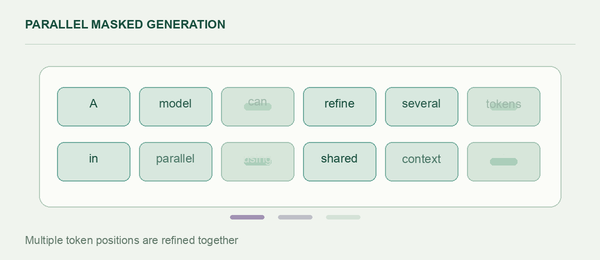
Adapting pretrained Qwen models for masked diffusion and parallel multi-token generation, while reusing existing model weights.
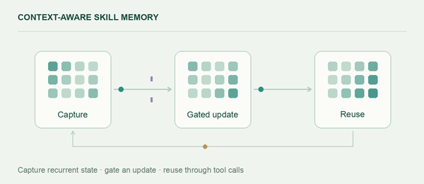
Investigating gated low-rank updates to recurrent state so a frozen language model can carry useful task knowledge through tool use.
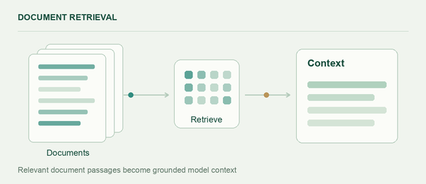
Built a document-retrieval project around PDF ingestion, a local vector store, and an API for retrieval-grounded applications.
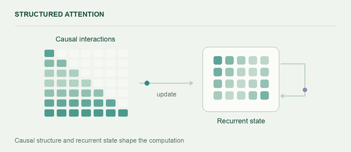
Developed and evaluated linear-attention variants, with reproducible latency/throughput measurements and GPU-aware implementations.
Agents that learn from what they do.
Industry research on learned skills, execution feedback, and reliable evaluation, alongside academic work on reusable agent memory.
Designed forward-only reinforcement learning with evolution strategies over a 512-dimensional skill subspace.
Reproduced SoftSkill on Qwen3-8B, evaluating how 32 learned vectors compare with a long text skill across accuracy, context use, and evaluation reliability.
Investigating gated low-rank updates to recurrent state so a frozen language model can carry useful task knowledge through tool use.
Generating, retrieving, and adapting.
Conditional image generation, retrieval-grounded applications, and research on adapting pretrained language models for diffusion-based generation.
Built a document-retrieval project around PDF ingestion, a local vector store, and an API for retrieval-grounded applications.
Adapting pretrained Qwen models for masked diffusion and parallel multi-token generation, while reusing existing model weights.

Implemented a conditional GAN in PyTorch for image colorization, connecting representation learning with image-to-image generation.

Explored conditional generative models for augmenting hyperspectral geological imagery used in perception workflows.
More useful computation. Less wasted work.
Linear attention, multi-token generation, compact skill representations, and model implementations shaped by the realities of GPU execution.
Adapting pretrained Qwen models for masked diffusion and parallel multi-token generation, while reusing existing model weights.
Reproduced SoftSkill on Qwen3-8B, evaluating how 32 learned vectors compare with a long text skill across accuracy, context use, and evaluation reliability.
Investigating gated low-rank updates to recurrent state so a frozen language model can carry useful task knowledge through tool use.
Developed and evaluated linear-attention variants, with reproducible latency/throughput measurements and GPU-aware implementations.
Perception that works beyond the experiment.
RGB–hyperspectral fusion, road-scene segmentation, active learning, and the engineering that moves models into production.

Built RGB–hyperspectral perception systems and sensor-fusion workflows that reduced manual-review costs by $200K annually.

Owned road-scene segmentation and anomaly detection from data curation to deployment, with human feedback driving model improvement.
Explored conditional generative models for augmenting hyperspectral geological imagery used in perception workflows.

Combined RGB inputs and landmark heatmaps in face-recognition experiments, with pose, image quality, and baseline comparisons.
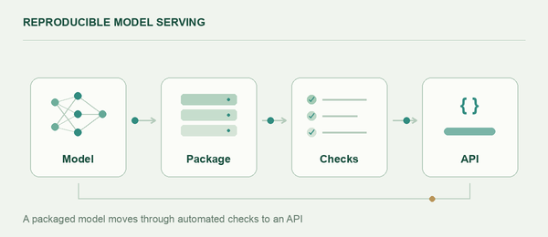
Packaged a vision model as a containerized FastAPI service with automated checks and reproducible deployment workflows.
Understanding signals. Modeling the nervous system.
Computational neuroscience, EEG representation learning, and physiological sensing—from my biomedical engineering background to ongoing research.
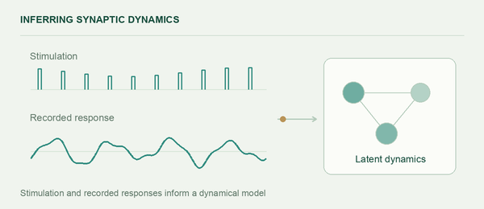
Developed a computational modeling and inference framework for short-term synaptic plasticity during deep brain stimulation.

Designed a contrastive learning objective for identity-discriminative EEG representations and genuine-user versus impostor separation.

Combined adaptive filtering, Kalman methods, and wearable sensing across maternal–fetal ECG separation and an ECG–PPG prototype.
Diagrams illustrate the methods, not experimental outputs.
More on GitHubFrom the research question to the running system.
ML Research Scientist Intern · Agent Evolution
Researching how agents improve through learned skills and execution feedback, under constraints on compute and context.
AI Engineer · Computer Vision
Owned road-scene segmentation and anomaly detection from data curation through training, evaluation, and deployment.
Lead Data Scientist · Computer Vision
Built and deployed RGB–hyperspectral perception systems that reduced manual-review costs by $200K annually.
Data Engineer
Built the data infrastructure behind analytical workflows: Azure and SQL ETL pipelines, large-scale auditing, and Python dashboards.
Publications and manuscripts in progress.
Published · PLOS ONE · 2022
Computational inference of short-term synaptic dynamics under stimulation.
Read paperSubmitted · IEEE T-BIOM
Connecting efficient models with biometric and biosignal authentication.
Manuscript in preparation
Collaborative research on EEG foundation-model representations.
Research in progress
Adapting pretrained language models for masked-diffusion generation.
From electrical and biomedical engineering to computer science and efficient AI.
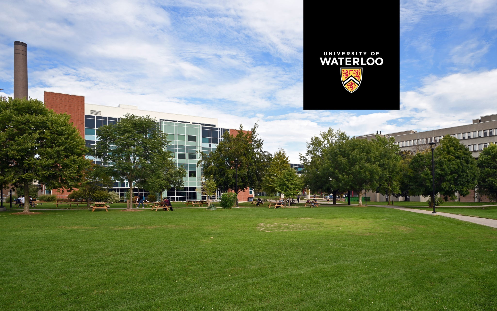
PhD · Computer Science
Efficient language models, agent learning, and GPU-aware research.

M.Sc. · Biomedical Engineering
Stochastic modeling, machine learning, and neural dynamics.

B.Sc. · Electrical Engineering
Signal processing and physiological sensing.
AI in Finance Summer School · August 2026
Selected participant in AIFSS, presented by RBC Borealis in Vancouver. Winner of the final participant hackathon challenge.
Working on agents, generative models, or efficient LLMs? I’d love to hear what you’re building or researching.